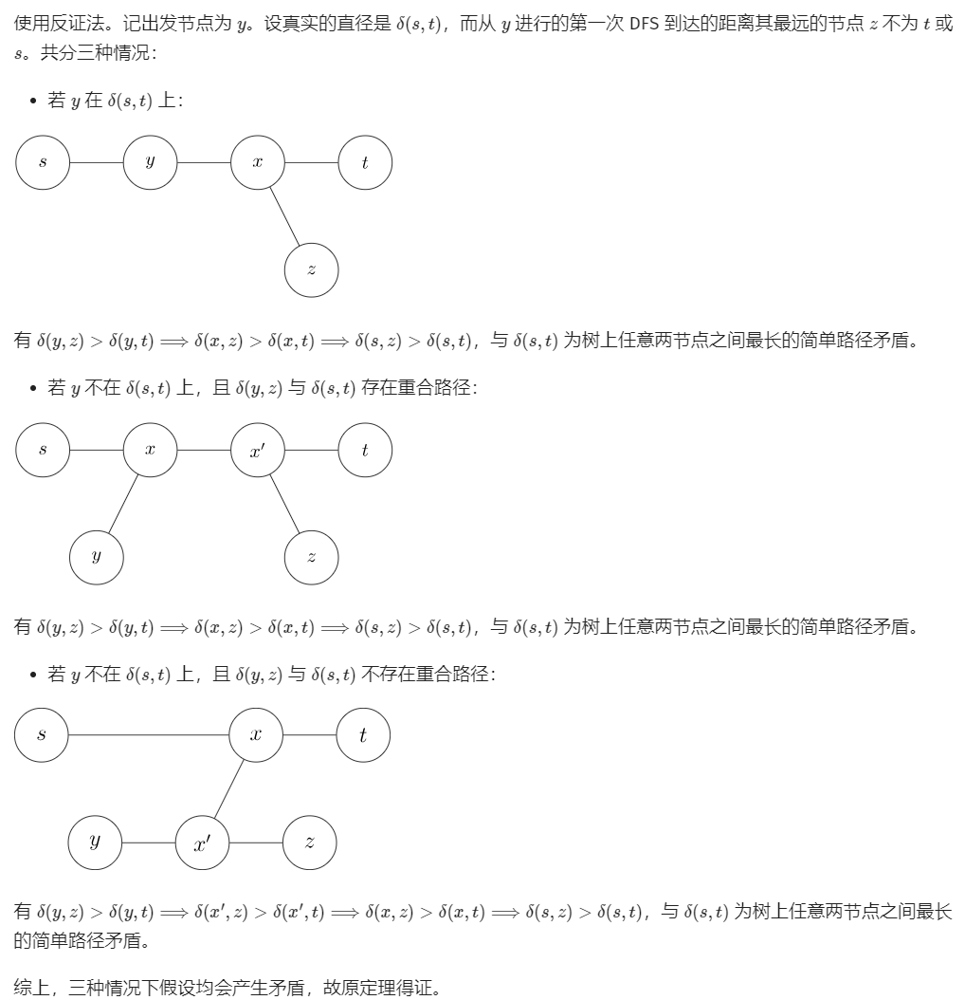

小明去A市旅游，已知A市有N个旅游景点，景点之间有路径连接组成一棵树。现在小明想要经过其中M个节点，问能经过这M个节点的最短时间（假设每条边需要时间相同），以及开始节点的最小编号。
输入：
第1行：节点数 需要经过的节点数
第2-N行：每一行表示连接两个节点的一条边
第3行：M个数，表示需要经过的节点编号
1 2 3 4 5 6 7 7 2 1 2 1 3 1 4 2 5 2 6 3 7
思路：
当一棵树（节点为N）的每个节点都要经过时，经过所有节点的最短路径的长度是?
由于树的特殊结构，N个节点一定有N-1条边。选择一个叶节点为起点，我们从起点到终点的边只要走一次，其余边要走两次。走过的总路长为
\[l = L_{start,end} + 2 * (N-1-
L_{start,end}) = 2N-2 - L_{start,end}\]
因此我们要让从起点到终点距离最长，可以得到总的走过的距离最短。
再考虑如果只需要经过其中M个节点。那么只要先构造出包含这M个节点的最小的树。
所以步骤可以分为:
（1）保存树的信息
（2）找到连通M个节点的最小的树
（3）找到这个树中两个节点之间的最远距离
1.构造树
树可以记录节点数N，边edges(vector<vector>)，另外根据题目要求再用一个is_visit（长度为N的bool
vector）记录每个节点是否需要经过。
1 2 3 4 5 6 7 8 9 10 11 12 13 14 15 16 17 18 19 20 21 22 23 24 25 26 27 28 29 30 31 32 33 34 35 36 37 38 39 40 41 class Solution {public :Solution (int m, int n){resize (N);resize (N, false );resize (N, false );void addEdge (int i, int j) push_back (j);push_back (i);void setVisit (int i) true ;private :int M, N;int >> edges;int > is_visit;int main () int M, N;Solution solution (M, N) ;for (int i = 0 ; i < N - 1 ; i++)int a, b;for (int i = 0 ; i < M; i++){int a;setVisit (a);
2.找到连通M个节点的最小树
需要删除不用经过的节点。
对于不用访问的点来说，如果它是叶节点，那么可以删除。如果它不是叶节点，但它的叶节点都不用访问，那么它也可以删除。
我们可以递归地进行删除：
从一个节点出发，定义一个函数delete(current,
father)，在函数内访问它除father之外的所有节点，递归删除它的子节点，如果遍历完所有子节点均已删除，就删除该节点。使用一个is_delete(bool
vector)记录已删除的节点。
1 2 3 4 5 6 7 8 9 10 11 12 13 14 15 16 17 18 19 20 21 void deleteNode (int current, int father) for (int i : edges[current])if (i == father)continue ;deleteNode (i, current);if (!is_visit[current]){bool flag = true ;for (int i : edges[current]){if (i == father)continue ;if (!is_delete[i]){true ;break ;if (flag){true ;
3.树的直径
找树上两个节点之间的最远距离是计算树的直径。可以参考Leetcode1245
题解中给出了三种方法，这里实现其中两种
执行两轮 BFS（广度优先搜索）
从任意一点A出发，找到离其最远的一个点B。点B一定是最远路径的一个端点。再找到距离B最远的点C，BC即为最远路径。
证明过程如下: https://oi-wiki.org/graph/tree-diameter/

实现代码：
findLongestNode(node)使用bfs找到距离某个节点node的最远点，设置一个node结构存储bfs搜索时每个点的距离
1 2 3 4 5 6 7 8 9 10 11 12 13 14 15 16 17 18 19 20 21 22 23 24 25 26 27 28 29 30 31 32 33 34 35 struct Node {int index;int dist;Node (int index, int dist): index (index), dist (dist) {}int findLongestPath () int i = 0 ;while (is_delete[i]){findLongest (i);findLongest (nodeA.index);return nodeB.dist;Node findLongest (int i) {vector<bool > visited (N, false ) ;push_back (Node (i, 0 ));int current_index = 0 ;true ;while (current_index < q.size ()){for (int node_index : edges[current.index]){if (!visited[node_index]){push_back (Node (node_index, current.dist + 1 ));true ;return q.back ();
DFS
如果一个点已知在最长路径上，那么我们找到从它出发的最长和次长路径，将两个距离相加就是最长路径的长度。对于已遍历过节点，下一次找最长路径时不需要再经过，因此我们可以随便取一个点，作为根节点，然后从根节点出发，找到每个节点向下延伸最远的两个距离。例如在求findlongest(0,-1)时，我们要找从节点0出发的最远距离，通过递归地调用findlongest(node,
0)，找到所有与0节点相连的node向下的最远距离。在寻找过程中用一个全局变量longest_length记录最长+次长。
1 2 3 4 5 6 7 8 9 10 11 12 13 14 15 16 17 18 19 20 21 22 23 24 25 26 0 int findLongestPath ()findLongest (0 , -1 );return ;int findLongest (int current, int father) int d1 = 0 , d2 = 0 ;for (int node: edges[current]){if (node == father)continue ;int dist = findLongest (node, current) + 1 ;if (dist > d1){else if (dist > d2){max (d1 + d2);return d1;
完整代码
这里找最长路径使用了第一种方法
1 2 3 4 5 6 7 8 9 10 11 12 13 14 15 16 17 18 19 20 21 22 23 24 25 26 27 28 29 30 31 32 33 34 35 36 37 38 39 40 41 42 43 44 45 46 47 48 49 50 51 52 53 54 55 56 57 58 59 60 61 62 63 64 65 66 67 68 69 70 71 72 73 74 75 76 77 78 79 80 81 82 83 84 85 86 87 88 89 90 91 92 93 94 95 96 97 98 99 100 101 102 103 104 105 106 107 108 109 110 111 112 113 114 115 116 117 118 119 120 121 #include <iostream> #include <queue> #include <vector> using namespace std;struct Node {int index;int dist;Node (int index, int dist): index (index), dist (dist) {}class Solution {public :Solution (int m, int n){resize (N);resize (N, false );resize (N, false );void addEdge (int i, int j) push_back (j);push_back (i);void setVisit (int i) true ;void deleteNode (int current, int father) {for (int i : edges[current])if (i == father)continue ;deleteNode (i, current);if (!is_visit[current]){bool flag = true ;for (int i : edges[current]){if (i == father)continue ;if (!is_delete[i]){true ;break ;if (flag){true ;int getRemainedNum () {int n = 0 ;for (int i = 0 ; i < N; i++){if (!is_delete[i])return n;int findLongestPath () {int i = 0 ;while (is_delete[i]){findLongest (i);findLongest (nodeA.index);return nodeB.dist;Node findLongest (int i) {vector<bool > visited (N, false ) ;push_back (Node (i, 0 ));int current_index = 0 ;true ;while (current_index < q.size ()){for (int node_index : edges[current.index]){if (!is_delete[i] && !visited[node_index]){push_back (Node (node_index, current.dist + 1 ));return q.back ();private :int M, N;int >> edges;bool > is_visit;bool > is_delete;int main () int M, N;Solution solution (M, N) ;for (int i = 0 ; i < N - 1 ; i++)int a, b;addEdge (a, b);for (int i = 0 ; i < M; i++){int a;setVisit (a);deleteNode (0 , -1 );int remained = solution.getRemainedNum ();int c = solution.findLongestPath ();int shortest = 2 * (remained - 1 ) - c;